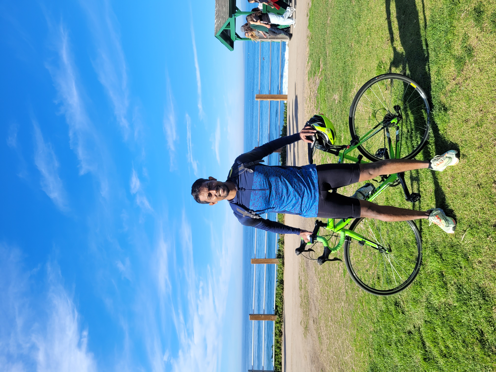
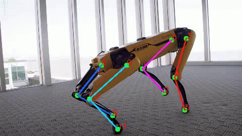

|
Sharath Matada I'm a senior engineer at Horizon Surgical Systems where I'm working on designing surgical robots for robotic ophthalmic surgery. I graduated from UC San Diego, where I worked with Prof. Nikolay Atanasov at the Existensial Robotics Lab. My research was focused on learning based planning. My professional experience includes my work at Systemantics as a Senior Robotics Engineer with a focus on design and controls for 6 DOF industrial arms. I was responsible for introducing collaborative features for safe human-robot interaction. I worked under the guidance of Dr. Jagannath Raju. |
 |
{kind=link}
Academic ResearchI'm interested in learning based control and robot manipulation. I have a wide experirence in motion control and planning for robotic arms and quadrupeds. |
|
Planning using Neural Operators |
Generalizable Motion Planning via Operator Learning
Sharath Matada*, Luke Bhan*, Yuanyuan Shi, Nikolay Atanasov ICLR 2025 In this work, we introduce a planning neural operator (PNO) for predicting the value function of a motion planning problem. We design neural operators that map environments as cost functions to value functions. This reformulation enables us to generalize to new environments without re-trainning and inherits the super resolution properties of Fourier Neural Operators. |
|

Pose Estimation of a dancing spot |
Image-based Robot Motion Reconstruction in Unstructured Environment
Jingpei Lu, Sharath Matada, Yiyu Chen, Florian Ritcher, Quan Nguyen, Michael Yip Submitted to Science Robotics project page / code ; Reconstruction of complex robot motion from video of dynamic robot motions using keypoint detection. My work focused on integrating dynamics and simulating estimated poses on real robots. |
Industrial Research and DevelopmentI previously worked as a robotics engineer at Systemantics focusing on the design and development of India's first collaborative arm. My work here ranged from the design of six-axis serial manipulators to the design of innovative six-axis hybrid manipulators. I have worked extensively on the design and analysis, motion control, joint controller software design of these robots. |

|
Motion Control
Systemantics, Bengaluru, India
|

|
Collision Detection
Systemantics, Bengaluru, India Worked on integrating collaborative features such as collision detection for safe human-robot collaboration. Used momentum based disturbance observers for flexible joints without using external force-torque sensor or internal joint torque sensors. |

|
Lead Through Teaching
Systemantics, Bengaluru, India Worked on implementing lead through teaching using admittance controller that shapes inertia of the system. |

|
Hybrid Manipulator
Systemantics, Bengaluru, India The 6 DOF hybrid manipulator is a patented manipulator design which combines properties of both serial link and parallel link manipulators to achieve lower power consumption and large working volume
|

|
ARA: Antropomorphic Robotic Arm
ABB Robotics, Bengaluru, India Robotic manipulation tasks using an Antropomorphic End Effector |
|
Based on Jon's website template. |